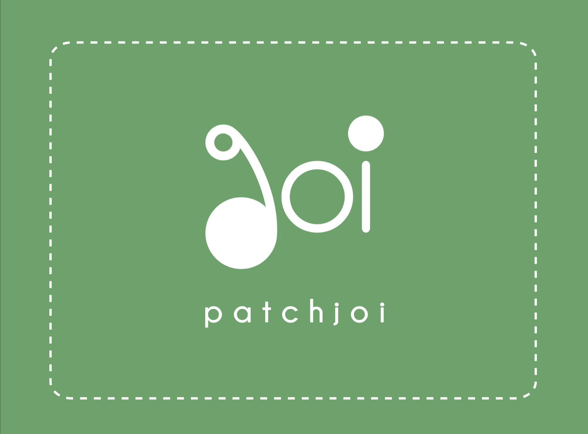

PATCHJOI
Patchjoi is a start-up knitted clothing company that has a mission to provide warmth and comfort through the quality of their products.
start from sketch
I started developing the logo with "joi", as part of the company's name, which can be also referred as 'joy'. As Patchjoi hopes their clothing can spark joy and great impression for their customers. This does not only bring the identity but also emphasizes the company's core value.
Since the company focuses on knitted clothing, the idea of connection and looping came into the inspiration. Based on this concept, I researched and gathered images that inspired me on the general composition.
further development
Inspired by the knitted patterns and the accessories added onto the garments, I developed a composition that is combined with round shapes and lines, yet an invisible grid is hidden behind and hinting the unity among the components. Just like the relationship between products and customers, the company wishes their products are able to create connection with potential customers.

Reflection
One strategy I learned from this project is to understand the company's identity. While developing the logo, investingating the company's background and products are very helpful to brainstraim the elements can be implements into the brand language. Also, considering the target audience is also essential since the brand language need to show effectively and appeal to the target audience's interest.


 ◀ previous project: FAVE ASIA
next project: YK PAO SCHOOL ▶
◀ previous project: FAVE ASIA
next project: YK PAO SCHOOL ▶